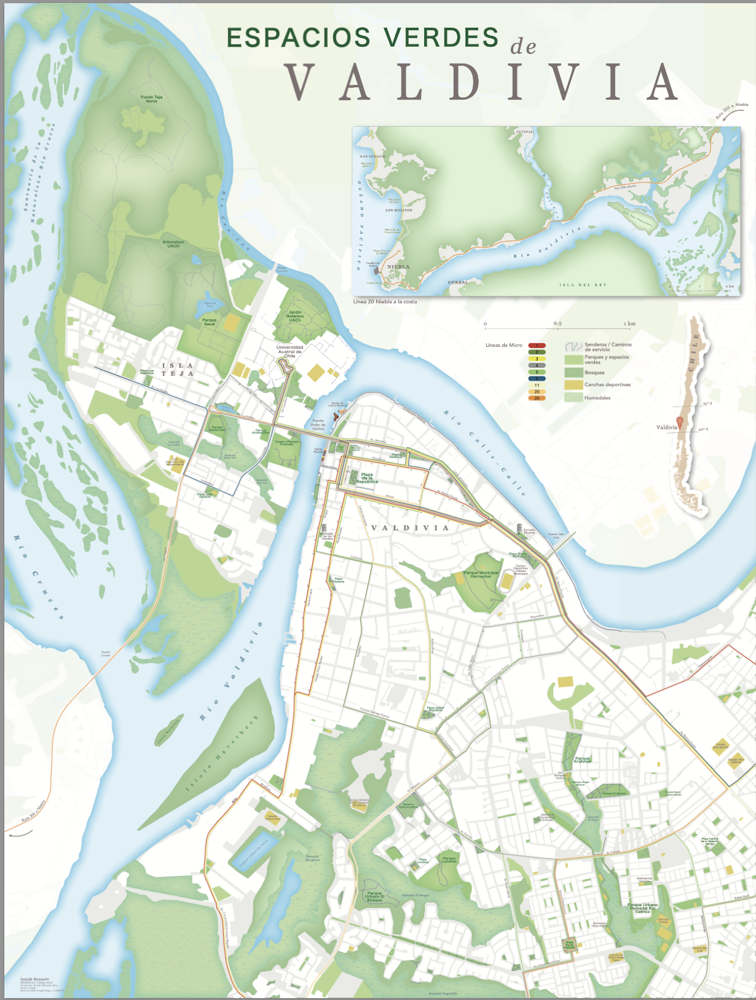
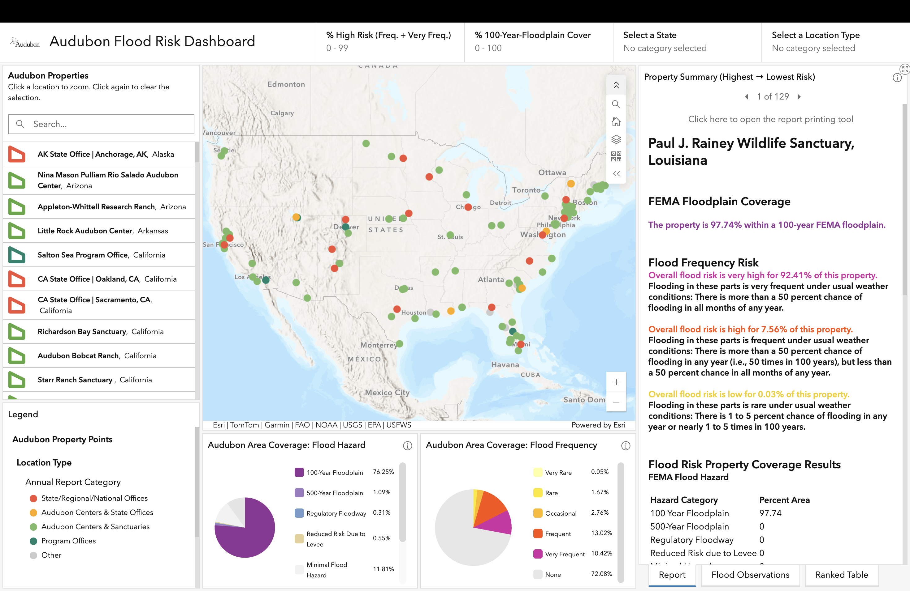
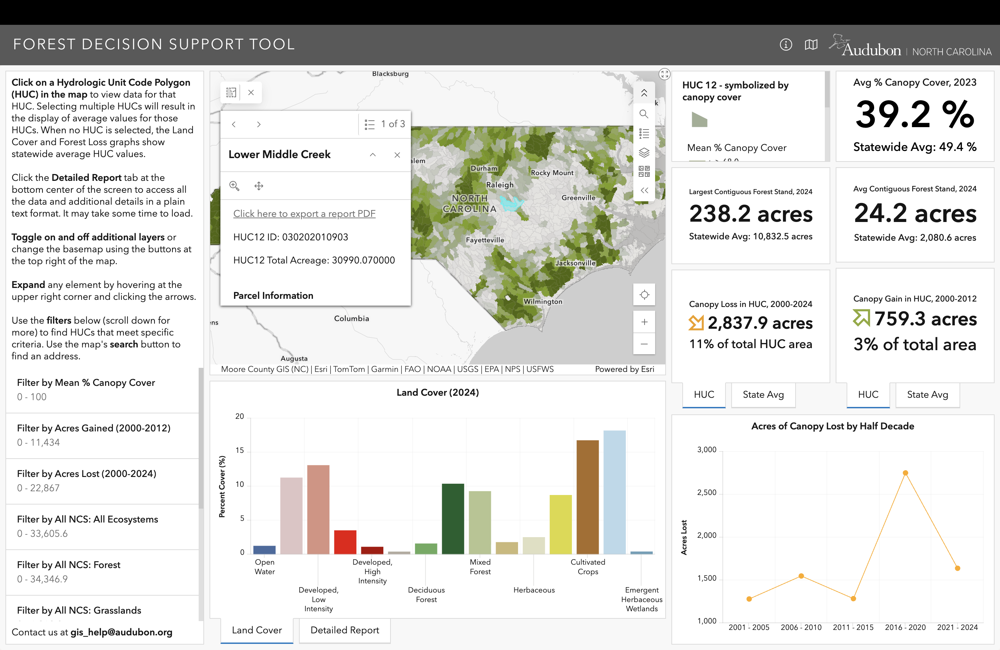
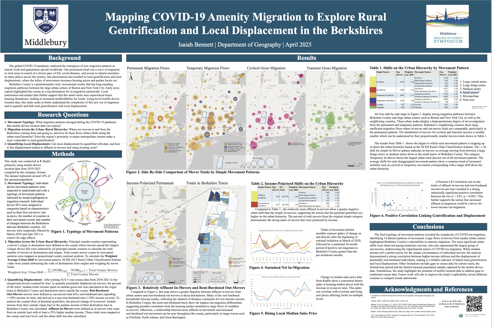

Highlights

↗
Personal
Biking to Orange Bike Brewing Co.

↗
Academic · Middlebury College
Espacios Verdes de Valdivia, Chile

↗
Professional · Audubon
Audubon Flood Risk Dashboard

↗
Professional · Audubon
NC Forest Decision Support Tool

↗
Academic · Middlebury College
COVID-19 Migration & Rural Gentrification in the Berkshires

↗
Academic · Middlebury College
Rewilding Vermont: Protecting Vermont's Public Forests